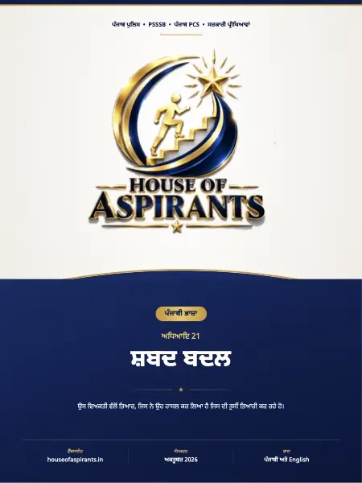

📖 ਆਨਲਾਈਨ ਪੜ੍ਹੋ · 12 ਪੰਨੇ⬇ ਡਾਊਨਲੋਡ
ਪੜ੍ਹ ਲਿਆ? ਇੱਕ ਛੋਟੇ MCQ ਟੈਸਟ ਨਾਲ ਜਾਂਚੋ ਕਿ ਕੀ ਯਾਦ ਰਿਹਾ।

ਸਾਰ
ਅਧਿਆਇ 21 ਸ਼ਬਦ ਬਦਲ Word Substitution ਇਸ ਅਧਿਆਇ ਵਿੱਚ ਇੱਕ-8<ਸ਼ਬ&@ਦੀ ਬਦਲ @ਕੀ 9Apਹੁੰ&\>ਦਾ 9Hਹੈ? q ਇੱਕ-8<ਸ਼ਬਦੀ ਬਦਲ @ਕੀ 9Apਹੁੰਦਾ 9Hਹੈ? q ਇੱਕ-8<ਸ਼ਬਦੀ ਬਦਲ Aਚੁਣਨ &@ਦੀ 5? ਵਿਧੀ ਵਿਅਕਤੀਆਂ ਲਈ 8<ਸ਼ਬਦ ਕੰਮ ਅਤੇ \Gਪੇਸ਼ਿਆਂ (\>ਨਾਲ Aਜੁੜੇ 8<ਸ਼ਬਦ ਅਭਿਆਸ \M0ਪਸ਼ਨ ਮੁੱਖ ਗੱਲ ਜਦ ? ਕਿਸੇ 5\>ਵਾਕੰਸ਼ \>ਜਾਂ ਕਈ 8<ਸ਼ਬਦਾਂ &Gਦੇ -\>ਭਾਵ (Bpਨੂੰ qਇੱਕ 8<ਸ਼ਬਦ
ਡਾਊਨਲੋਡ
ਅਧਿਆਇ 21: ਸ਼ਬਦ ਬਦਲ (One Word Substitution) (PDF) ਡਾਊਨਲੋਡ ਕਰੋ - 2.4 MB, 12 ਪੰਨੇ, ਇਸੇ ਸਾਈਟ ਉੱਤੇ। ਕੋਈ ਸਾਈਨ-ਅੱਪ ਨਹੀਂ, ਕੋਈ ਈਮੇਲ ਨਹੀਂ, ਕਿਸੇ ਹੋਰ ਸਾਈਟ ਰਾਹੀਂ ਨਹੀਂ।
ਇਸ ਫ਼ਾਈਲ ਬਾਰੇ
- ਫ਼ਾਈਲ ਦਾ ਨਾਮ:
punjabi-grammar-shabad-badal-one-word-substitution-notes.pdf - ਪੰਨੇ: 12
- ਆਕਾਰ: 2.4 MB
- ਪ੍ਰਕਾਸ਼ਿਤ: 6 ਅਕਤੂਬਰ 2026
- ਸ਼੍ਰੇਣੀ: ਪੜ੍ਹਾਈ ਸਮੱਗਰੀ
ਇਹ ਫ਼ਾਈਲ ਕਿੱਥੇ ਹੈ
- ਵਿਸ਼ਾ: ਪੰਜਾਬੀ
- ਭਾਸ਼ਾ: ਪੰਜਾਬੀ
- ਅਧਿਆਇ: ਅਧਿਆਇ 21: ਸ਼ਬਦ ਬਦਲ (One Word Substitution)
ਇਹ ਪੰਨਾ content/study-material/punjabi/punjabi/21 - ਸ਼ਬਦ ਬਦਲ (One Word Substitution)/ ਤੋਂ ਆਪਣੇ-ਆਪ ਬਣਿਆ ਹੈ। ਵਿਸ਼ਾ, ਭਾਸ਼ਾ ਅਤੇ ਅਧਿਆਇ ਫ਼ਾਈਲ ਦੇ ਫੋਲਡਰਾਂ ਤੋਂ ਲਏ ਗਏ ਹਨ, ਅਤੇ ਪੰਨਿਆਂ ਦੀ ਗਿਣਤੀ ਤੇ ਸਾਰ ਖ਼ੁਦ PDF ਵਿੱਚੋਂ ਪੜ੍ਹੇ ਗਏ ਹਨ।